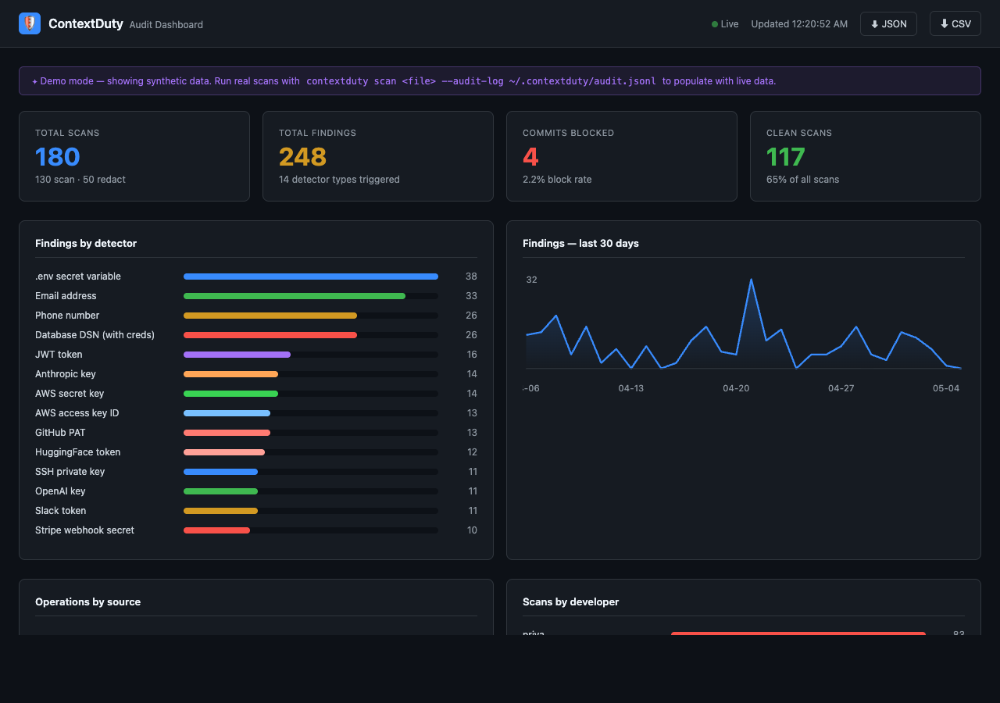

Stop secrets, PII, and credentials from reaching your LLM — at the git commit, in MCP tool results, and in CI. Zero dependencies. No proxy. No data leaves your environment.
Developers paste configs into Cursor. Agents read tool results with connection strings. CI logs get fed to LLMs for debugging. Every step is a chance for secrets to leave your environment.
ContextDuty intercepts sensitive data at three layers that no existing tool covers — before anything reaches an LLM, a prompt, or git history.
# Developer stages llm_config.py with real keys accidentally $ git add llm_config.py $ git commit -m "add LLM integration config" 🚫 BLOCKED llm_config.py (3 finding(s) detected) ❌ Commit rejected — ContextDuty detected sensitive data. Run: contextduty redact --in llm_config.py --out llm_config.py # Developer redacts and retries $ contextduty redact --in llm_config.py --out llm_config.py $ cat llm_config.py ANTHROPIC_API_KEY = "<ANTHROPIC_KEY_aee1b6dbb8>" OPENAI_API_KEY = "<OPENAI_KEY_275dd184c2>" DATABASE_URL = "<DB_DSN_ed71028c16>" $ git commit -m "add LLM integration config (redacted)" [main a1b2c3d] add LLM integration config (redacted) ✅ Zero secrets in git history.
LLM gateways (LiteLLM, Portkey, Helicone) intercept the API call after a prompt is assembled and sent. They can't catch what's already in a staged file or a tool result.
| Capability | LLM / MCP Gateway | ContextDuty |
|---|---|---|
| Blocks secret at git pre-commit | ✗ | ✓ |
| Scans MCP tool results before context window | ✗ | ✓ |
| CI/CD pipeline enforcement | ✗ | ✓ |
| In-process — no network hop, no proxy | ✗ | ✓ |
| Air-gap / regulated environment safe | ✗ | ✓ |
| Your data sent to third-party infra | Yes | Never |
| Policy-as-code in your repo | ✗ | ✓ .contextduty.json |
| Runtime API call inspection | ✓ | ✓ (via MCP server) |
Gateways guard the inference call. ContextDuty guards everything upstream of it.
Every detector is enabled by default with deterministic masking — the same value always produces the same mask token, enabling correlation across log lines without exposing the raw secret.
<ANTHROPIC_KEY_aee1b6dbb8> is stable across runs. You can correlate findings across audit logs, CI runs, and MCP traces without ever storing the raw secret.
Every scan writes a JSONL audit entry — no raw secret values, only finding counts and detector names. The local dashboard shows trends, blocked commits, and per-developer activity.
Run contextduty dashboard --demo to see it now

Teams commit .contextduty.json to the repo. Policy changes go through code review. Individual developers can override per-detector modes — block vs redact vs audit-only — for their specific context.
{
"mode": "redact",
"detectors": [
"anthropic_key", "openai_key",
"aws_key", "aws_secret",
"db_dsn", "github_pat"
],
"detector_modes": {
"aws_key": "block", // never allow
"email": "redact", // mask it
"phone": "audit" // log, don't block
},
"allow_patterns": {
"email": [".*@acme\\.com"] // internal ok
},
"extends": "../org-base-policy.json"
}
contextduty scan file.py contextduty redact \ --in raw.py --out clean.py
# ~/.cursor/mcp.json
{
"mcpServers": {
"contextduty": {
"command": "contextduty-mcp"
}
}
}
contextduty install-hooks
# .pre-commit-config.yaml
repos:
- repo: local
hooks:
- id: contextduty
name: ContextDuty scan
LLM gateways watch the API call. ContextDuty watches the source — the file, the commit, the tool result, the context window — where leakage actually starts.
Try the demo: contextduty dashboard --demo · Full five-act demo: bash demo/real_demo.sh